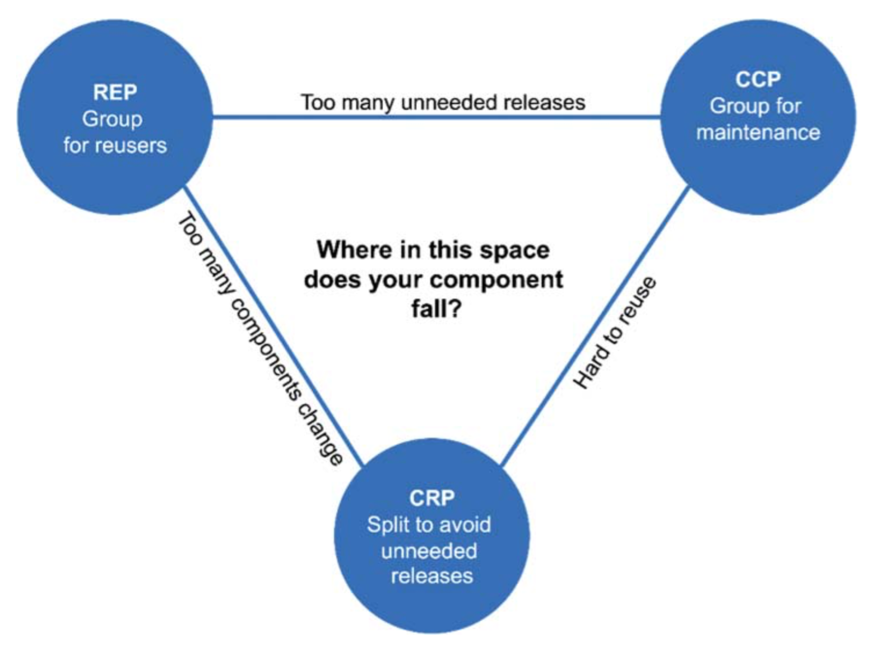
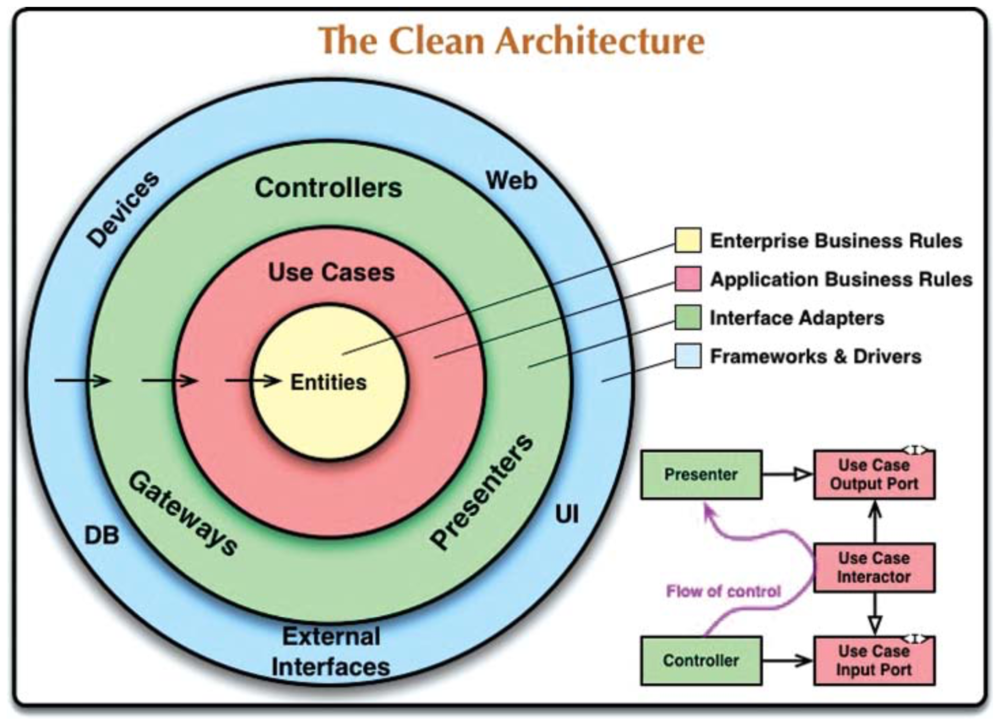

- 架构是什么，如何衡量架构的好坏
- 编程范式的发展，各自解决什么问题？
- SOLID 原则
- 组件
- 清晰架构
关于架构
- 什么是设计
- 什么是架构
一开始可以认为，先认为设计既架构
架构高层次的结构，以房子为例，架构既是一个房子的结构，立面，房间，等等。
设计则是低层细节，设计师交付的装修图，比如软装，布线，等等
高层结构和底层细节在一起能决定整个房子的设计，决定房子最后的施工（最终的产品）。
这个比喻不太对，一个架构只能出一套房子。我所理解的架构更像是设计的指导思想，设计了成千上百个房子后所提炼出来的东西。
软件架构的目标就是最小化构建和维护一个系统的所需的人力资源。架构可以当成两个量的累加，降低构建系统的资源是重要的，当也可以适当增加构建的资源，以降低以后维护的资源，作者强调了制造混乱（making messes）最终总比保持清洁（staying clean）慢，也就是欲速则不达同意适用于软件开发。但是软件开发的复杂性在于，系统有用了才能体现出价值，把握系统发布的时间窗口也很重要，做软件的困难也在于如何平衡时间与设计。
另外一个量就是维护的成本，衡量一个架构的好坏，由系统变动所需要的代价来决定。
- Behavior，满足需求的代码
- Structure，
在下文中的 Function 和 Architecture 应该也是对于 Behavior 和 Structure。
The difficulty in making such a change should be proportional only to the scope of the change, and not to the shape of the change.
怎么理解改变的范围(scope of the change) 和改变的形状（shape of the change）
对于利益相关者来说（stakeholder），他们认为提供的需求都是在一定范围内的变化。而对于开发者，新的需求总意味着系统形状的变化。因为原来的系统架构不适用于新的需求。
功能还是架构重要？功能衡量系统能不能满足需求？架构意味着系统是否易于变化。作者举了两个极端的例子
- 一个系统能完全的满足需求但是不可变。
- 一个系统完全不可用，但是易于改变。
大部分人直觉上会选择那个马上就能跑起来的系统。但哪个系统更没用能？第一个系统虽然能用，但是一旦需求变化了变不能用了，比较难想象，或者说或修改系统的成本高于修改修改系统的收益，因为他非常难以更改。第二个系统虽然不能用，但是它可以持续改善最终变得有用。
- 软件的第一价值，行为或功能，往往是紧急但并不总是特别重要
- 软件的第二价值，架构，很重要但不会特别紧急
- 紧急重要
- 重要非紧急
- 紧急非重要
- 非紧急非重要
BM(Bussiness Manager) 与开发者往往把紧急但不重要的系统特性从第三位放到第一位。因为他们没有区分区分重要紧急与紧急非重要。最终往往忽略了对于系统来说重要的架构开发，而偏向于实现不重要的功能
BM 没有能力评估架构的重要性。对于开发团队必须要责任去强调架构的重要性。
编程范式的发展
结构化编程
结构化编程（英语：Structured programming），一种编程典范。它采用子程序、代码区块、for循环以及while循环等结构，来取代传统的 goto。希望借此来改善计算机程序的明晰性、品质以及开发时间，并且避免写出面条式代码。
结构化编程的发展，了解了一下 Dijkstra 的 《Go To Statement Considered Harmful》，代码文本应该贴近代码运行时状态。当程序停止在某一行，如果是顺序执行的代码，我们很容易看出程序运作到哪了，如果是使用了 goto，我们将很难知道这行代码是通过哪个 goto 跳转过来的，`goto** 破坏程序的结构和可读性。Dijkstra 在意的是程序的结构和思路的清晰，而不是极限的优化。
- 在代码中到达特定“位置”的方法越多，对于系统的状态在该点处的信心越不可信
讨论了两种证明程序正确的方法，分别是形式证明（Formal Proofs）和科学方法（Scientific Method）。形式证明是数学证明，正向证明一个函数是正确的，科学方法是反向证明，通过特例来证明程序不可靠，如果不能证明程序不可靠，则认为程序是正确的。
结构编程强制让程序递归分解为一个足够小的可被证明的函数集合。我们可以通过测试来证明一个函数是否正确，如果不能构造让程序错误的测试，则认为程序是正确的。
结构化编程，对直接控制转移进行了限制，控制转移只能通过函数调用实现。
现代的编程语言有不少语言还保留了 goto 这个关键字或相似功能，但都将其跳转范围限制在了函数内(比如 golang，java)，这样既可以灵活的控制函数的逻辑、统一处理错误清理资源，也不会破坏结构化程序的模块划分。
面向对象编程
OO 是通过合并数据和函数，对真实世界进行建模。这样对 OO 的定义等于什么也没说，作者站在架构师的角度阐明 OO 给架构设计带来了什么。
OO 的三大特性，封装、继承、多态也不是 OO 独创的。
封装（encapsulation），隐藏细节，通过 api 暴露行为。不具备 OO 特性的 C 语言，只暴露头文件中声明的方法，可完全隐藏所有实现细节。
继承（inheritance），如果认为继承是子类能当做父类使用，那么很多非 OO 语言也具备这种把一直数据结构当做另外一种数据结构使用的能力。比如 C 可以通过类型转换声明把一种结构体当做另外一种使用。这种实现就像是鸭子类型一样。当然 OO 提供了更便利和安全的实现方法。
多态（polymorphism），就是函数指针的应用，同样 C 语言也具备有这种能力，但是 OO 提供了更安全和便利的方法，比如 Java 的接口，使用方法签名，避免了函数指针潜在的危险。
OO 对间接控制转移进行了控制。
多态有着更强大的能力。没有多态的时候，源码的依赖关系必须代码的实际运行流程一致。比如高级函数调用了低级函数，那么声明高级函数的源码必须依赖声明低级函数的源码。引入多态后，高级函数依赖于低级函数的接口，而不是具体实现。把对具体实现的依赖分离出来。低级的实现，可以被独立部署更替。这就是依赖反转。
OO 对架构师来说提供了使用多态性来获得对系统中每个源代码依赖关系的绝对控制的能力。允许架构师创建一个插件体系结构，其中包含高级策略的模块独立于包含低级细节的模块。底层细节分为插件模块，可以独立于包含高级策略的模块进行部署和开发。
函数式编程
这章有点散，主要讲函数式编程中的变量不可更改。为什么要关心变量的可变性？不可变的变量可以避免竞争，死锁，并发更新等多线程问题。
分离可变性，分离不可变组件和可变组件，尽可能多的把处理放入不可变组件中，用其来驱动尽可能多的可变组件中的代码。
EventSourcing，不保存对象的最新状态，而是保存对象产生的所有事件。见，http://edisonxu.com/2017/03/23/hello-cqrs.html
函数式编程，是一个强加于变量分配上的规则。
编程的发展，是一个添加限制的过程。三种范式都从我们身上夺走了一些东西。每一个都限制了我们编写代码的方式。他们没有增加我们的力量或我们的能力。
设计原则
SOLID 原则，指导如何安排函数和数据结构进入类中。这里类不是面向对象的概念，而是更加泛化指一组函数和数据。
目标是，指导中间级别（module level）的软件结构：
- 容忍变化
- 易于理解
- 是许多软件系统中可以使用的组件的基础
这里作者把软件系统分为 module -> component -> architecture
单一职责原则（Sinple Responsibility Principle）
单一职责是个不恰当的名字，容易被误会为，每一个模块应该只做一件事。在低级别中，对于函数来说是这样没错。但这不是 SRP，SRP 是指：
应该有且仅有一个原因引起模块的变更。 一个模块应该对一个且只有一个用户或利益相关者负责
用行为者（Actor） 来代替一个用户或利益相关者更为恰当。因为一个需求变更可能是多个用户或利益相关者的要求。
作者提到了模块（module）的定义，最简单的定义只是一个源文件（Java 中的类）。更通用的定义是一个模块只是一组内聚的函数和数据结构。这组函数和数据结构因为SRP，只对一个行为者负责而内聚在一起。
SRP 本身就是为了降低需求变更的痛苦，类 T 有两个职责 R1 和 R2，A、B 各自依赖于 R1，R2。A B之间就有了不必要的耦合，如果 R1 需要变更，导致类 T 需要改变也会影响到 R2，导致 B 也需要重新测试和构建。
SRP 很简单，但要做好很困难，难在于职责的划分。职责也可能随着需求的变更而发生改变。经验可以起到一定的作用，职责难以划分的时候也不要强行划分导致过度设计，关键还是的适应变更，不断迭代。
开闭原则（Open-Closed Principle）
开闭原则的意思是一个模块（作者在这里用的是 Software Artifact），应该对扩展开发，对修改关闭。
OCP是系统架构背后的推动力之一。 目标是使系统易于扩展而不会让变化的系统产生很高的影响。 这个目标是通过将系统划分为组件，并将这些组件安排到一个依赖层次结构中实现的，该层次结构保护更高级别的组件免受更低级别组件中更改的影响。
里氏替换原则（Liskov Substitution Principle）
打破 LSP 的例子，假设正方形（Square）是矩形（Rectangle）的子类，
Rectangle r = … r.setW(5) r.setH(2) assert(r.area() == 10) // 对 square 不成立
LSP 要求子类从抽象继承而不是从具体继承，如果从抽象继承，子类必然要重写父类方法。总结一句话 —— 就是尽量不要从可实例化的父类中继承，而是要使用基于抽象类和接口的继承。
LSP可以并且应该扩展到架构层面。简单地违反可替代性，会导致系统的体系结构受到大量处理例外机制的污染。
接口隔离原则（Interface Segregation Principle）
ISP 和 SRP 很相像，使用多个专门的接口，而不使用单一的总接口，即客户端不应该依赖那些它不需要的接口。如果接口的两个实现类依赖于接口的不同功能，那就得考虑是不是需要把接口分离成两个。
依赖倒置（Dependency Inversion Principle）
依赖，指的是源码级的依赖，通过use、import、include 引入其他模块。依赖倒置意味着这些引入的模块只能是抽象的定义，而不是具体的实现。比如只能是接口、抽象类或者其他抽象定义。
这只是一个指导，将这个想法作为一个规则来处理是不现实的。因为软件系统是由许多具体实现支撑的。
另一个更现实的指导，是不要依赖于易变（volatile）的具体实现。因为抽象永远比实现更稳定，接口的改变意味着实现也需要改变。而具体实现的改变其被其实现的接口往往不需要变动。好的架构体现在接口的稳固性，能应付各种实现的改变。
- 不要引用易变的具体类（concrete classes）
- 不要从易变的具体类派生
- 不要重写具体函数（concrete functions）
大部分系统都必须包含一个具体的组件，一般来说就是 main，实例化所有具体组件，并将其传递给各种对应的抽象依赖。这种行为其实就是依赖注入（DI）。
控制反转（IoC）：一种反转流、依赖和接口的方式（DIP的具体实现方式）。这是一个有点不太好理解和解释的概念，通俗地说，就是应用程序本身不负责依赖对象的创建和维护，而是将它交给一个外部容器来负责，这样控制权就由应用程序转移到了外部IoC 容器，即控制权实现了所谓的反转。例如在类型A中需要使用类型B的实例，而B 实例的创建并不由A 来负责，而是通过外部容器来创建。
依赖注入（DI）：IoC的一种实现方式，用来反转依赖（IoC的具体实现方式）。比如我们如何实现控制反转，答案就是通过依赖注入去实现。
组件原则（Component Principles）
组件，指的是独立的可部署单元。比如 java 中的 jar，ruby 的 gem，或 Linux 系统的 .so。
组件内聚
组件内聚，是指如何把类和模块组合在一起形成组件。组件是相关的类和模块的集合，如何选择这个相关性，作者给了 3 个原则，也可以理解为一种分包原则。
- 重用发布等价原则（Release/Reuse Equivalency Principle），我理解为，一个组件应该前后兼容，并用版本号来追踪发布变化。从架构角度来说，构成组件的类和模块应该有一些总体的共同目的，并且可以一同发布。
- 共同封闭原则（Common Closure Principle），在同一时间因为相同原因而修改的类应该放在同一个组件（包）。但修改发生时，CCP 帮助我们把修改限定在一个最小范围里。所以这也是 OCP 的延伸。修改发生时，只对最小范围组件开放，其他组件封闭。CCP 其实也是 SRP 在组件级别的另一种描述。
- 共同重用原则（Common Reuse Principle），组件的所有类被一起重用。如果你重用了其中的一个元素，就重用整个组件。CRP表示，彼此不紧密相关的类不应该在同一个组件中。
REP和CCP是包容性原则，两者都倾向于使组件更大。 CRP是排除性原则，倾向于组件变得更小。 架构师试图解决这些原则之间的张度关系。

架构师应该在这个紧张的三角形中找到了一个符合当前开发团队关注点的位置，但也意识到这些担忧会随着时间而改变。例如，在项目开发初期，CCP 比 REP 更重要，因为可开发性比重用更重要。
参考：https://blog.csdn.net/steveyg/article/details/46765725
组件耦合
- 无环依赖原则 ADP（Acycle Dependencies Principle），包之间的依赖关系不能出现环。
如果需要依赖，可以通过 DIP 来实现，依赖反转
组件结构不能从上到下设计。 这不是系统设计的第一件事，而是随着系统的发展和变化而发展。组件依赖关系图与描述应用程序的功能很少有关系。 相反，它们是应用程序的可构建性和可维护性的映射。 - 稳定依赖原则 SDP（Stable Dependencies Principle），朝着的稳定的方向进行依赖 度量稳定性，F-in ，传入依赖；F-out，传出依赖；I，不稳定性；\(I = F-out/(F-in+F-out)\)，依赖关系应该，高 I 值依赖低 I 值。
- 稳定抽象原则 SAP（Stable Abstractions Principle），包的抽象程度应该和其稳定程度一致。 度量组件抽象性，Nc，类的数目；Na，抽象类或接口的数目；A = Na/Nc
如果将 I 作为横坐标，A 作为纵坐标，I、A 取值范围都为 [0,1]。
- 位于（0，0），也就是最稳定和最具象的，比如 Entities 和工具库就是位于这个区域。一旦需要变动会非常痛苦，所以也称为痛苦区。
- （1，1），无用区，最抽象的但是没用依赖，最不稳定。使用没有价值
- （1，0）与（0，1）之间称为主序列（Main Sequence），是远离两个区的最远的点的集合。
D 定义为与主序列之间的距离。\(D = |A + I - 1|\)，任何D值不接近于零的组件都可以考虑重新检查和重构。D 值衡量设计与依赖和抽象模式的一致性。
清晰架构
架构是什么
架构的主要目的是支持系统的生命周期。 良好的架构使系统易于理解，易于开发，易于维护和易于部署。 最终目标是最大限度地降低系统的生命周期成本并最大限度地提高程序员的生产力。
Architecture 用了一个词形状（Shape）
- 这个形状的形式（form）是指系统如何划分为组件，各个组件如何安排，组件之间如何沟通。
- 这个形状的目的，是促进这个形式内的系统的开发，部署、运维和维护
要区分系统结构与系统的功能，好的架构必须支持：
- 开发
- 部署
- 运维（operation）和用例
- 维护（maintain）
良好的建筑师设计政策(Policy)，以便有关细节的决定可以推迟并推迟尽可能长。
独立性
- 解耦层次，比如分为 UI - 应用相关业务逻辑 - 应用无关业务逻辑（领域内逻辑） - 数据库
- 解耦用例，相比层次解耦，用例解耦可以当做纵向分层，根据 feature 进行划分。
- 解耦模式，是作为一个巨大的单件，还是互相独立的可部署单元，或是 SoA 和微服务，在软件开发的不同时期需求不一样，并且会不断变化。
- 独立开发的能力，解耦出来的组件具备有独立开发的能力，包括横向和纵向。
- 独立部署的能力，理想情况下，应该具备有热交换层次和用例的能力。
源码级别的独立性，通过 module 进行隔离，module 之间通过函数调用交流，改变一个 module 不会导致另外一个 module 重新编译。
边界
Software architecture is the art of drawing lines that I call boundaries.
边界*将软件元素彼此分开，并限制一方对另一方的了解。架构是演化的、渐进的。
在运行时，越过边界，实际实际就是一边的函数调用另一边的函数并传递一些数据。
- 动态链接库，最简单的边界便是，动态链接库，比较 jar、ruby gem。越过边界的就是函数调用，成本最低
- 本地进程，跨本地进程边界的通信涉及操作系统调用，数据封送和解码以及处理器上下文切换，这些开销是相当昂贵的。
- 服务，最强的边界，服务间通过网络进行交流，有不可忽略的延迟
线程不是架构边界或部署单元，而是一种组织计划和执行顺序的方法。 它们可能完全包含在一个组件中，或分布在很多组件中。
政策与级别
什么是政策（Policy），可以理解声明语句的集合，这些声明将输入转换为输出的策略的详细描述。换句话说就是需求。该政策可以分解为许多不同的较小的政策声明。其中一些描述如何计算特定的业务规则。一些描述如何格式化某些报告。还有一些会描述输入数据如何验证，等等。部分开发软件架构的技巧是仔细地将这些策略彼此分开，并根据它们的变化方式对它们进行重新组合。由于相同的原因而改变的政策同时处于同一级别并且属于同一组件。出于不同原因或在不同时间发生变化的政策处于不同的层次，应该分为不同的组成部分。应用了 SRP CCP。
什么是级别（Level），对“级别”的严格定义是“与输入和输出的距离”。政策对系统的输入和输出的影响越大，其级别越高。管理输入和输出的政策是系统中最低级的政策。
应用高级别的政策更加稳定，低级别的政策应该依赖于高级别的政策。SDP
业务规则（Business Rules）
严格地说，商业规则是制定或节省商业资金的规则或程序。业务规则是脱离软件的存在，比如银行收取贷款的N％利息是一项使银行获利的业务规则。不过有没有计算机程序，这段规则还是客观存在的。这些规则称为关键业务规则，规则需要有对应的数据，这些数据称为关键数据，也叫实体（Entity）
- 实体，计算机系统中的一个对象，体现了一小批在关键业务数据上运行的关键业务规则。
- 用例，用例描述了特定于应用程序的业务规则，而不是实体内的关键业务规则。
用例期望输入数据，并产生输出数据。但是，一个格式良好的用例对象应该没有关于数据传递给用户或其他任何组件的方式的信息。
业务规则应该保持原始状态，不受用户界面或使用的数据库等基础问题的影响。 理想情况下，代表业务规则的代码应该是系统的核心，只需要关注较少的问题。 业务规则应该是系统中最独立和可重用的代码。
清晰架构
架构不是框架，框架只是工具。比如建造一间图书馆，我们要有书库，通道，阅读室等等便是架构，至于是用钢筋水泥，还是铝架是框架的范畴，属于工具，与功能无关。
良好的架构以用例为中心，以便架构师可以安全地描述支持这些用例的结构，而无需承诺框架，工具和环境。

清晰架构为洋葱型的架构，分为：
- 实体，关键业务逻辑和数据
- 用例，应用相关业务逻辑
- 接口适配层，将实体和用例转化为更适用外层使用的形式。将外部数据转化为用例或实体使用的内部形式。
- 框架与驱动，UI、Web、数据库、框架等，实现细节的层次。
- …其他，可继续扩展
源代码依赖关系始终指向内部。当你向内移动时，抽象和政策的水平会增加。 最外层的圆圈由低层次的具体细节组成。 随着您向内移动，软件变得更加抽象，并封装更高级别的策略。
Humble Object
Humble Object 模式，分离易于测试和不易于测试的代码。 https://teddy-chen-tw.blogspot.com/2014/10/blog-post_10.html
Humble = 难以测试的部分，比如 UI
- Presenter/View
- Database/Gateways
- Data Mappers
- Service Listeners
部分边界
完美的架构边界是非常昂贵的。可以只构建部分边界，将其作为完整边界的占位符。
- 策略模式
- 外观模式
层次与边界
边界在任何地方都可能存在，不仅仅层次之间存在边界，层次内部也可能存在边界
架构的矛盾在于，我们不应该预见抽象的必要性。这就是YAGNI的理念：“你不需要它。”这个信息是有智慧的，因为过度工程往往比不够工程化更糟糕。另一方面，当你发现你确实需要一个架构边界时，添加这样一个边界的成本和风险就会非常高。
但这不是一次性决定。您不是简单地在项目的开始时决定实施哪些边界以及忽略哪些边界。相反，你看。随着系统的发展，你会关注它。您注意到可能需要边界的地方，然后仔细观察摩擦的第一道烙印，因为这些边界不存在。 在这一点上，你要权衡实施这些边界的成本与忽视它们的成本 - 并且你经常审查这个决定。您的目标是在实施成本低于忽略成本的拐点实施边界。
主组件
在每个系统中，至少有一个组件创建，协调和监督其他组件。 我称这个组件为主组件。
- Highest Detail
- Lowest Policy
看作是应用程序的插件 - 一个插件，用于设置初始条件和配置，收集所有外部资源，然后将控制权交给应用程序的高级政策。 由于它是一个插件，因此可能会有许多主要组件，每个组件都有一个用于应用程序的配置。
服务
服务的好处：
- 服务彼此之间高度解耦，部分正确，服务仍可能存在耦合，比如处于同个网络或处理器间的共享资源，更明显的是共享数据格式。
- 独立开发和部署，实现这个好处服务并不是唯一选择。
尽管服务对于系统的可伸缩性和可开发性很有用，但它们本身不是架构上重要的元素。 系统的体系结构由在该系统内绘制的边界以及跨越这些边界的依赖性来定义。 该体系结构不是由元素通信和执行的物理机制所定义的。 服务可能是单个组件，完全被建筑边界所包围。 或者，服务可能由几个由架构边界分隔的组件组成。 在极少数情况下，客户和服务可能如此耦合以至于没有任何体系结构意义。
测试边界
测试也是系统的一部分，可以将测试看作架构中最外层的圆圈。测试是最孤立的系统组件。它们不是系统操作所必需的。没有用户依赖于他们。他们的作用是支持开发，而不是运维。
测试需要依赖于被测试代码。测试不要依赖于不稳定的系统组件。否则，一般系统组件的更改可能导致数百甚至数千测试中断。这就是所谓的测试脆弱性问题。
测试 API，创建一个特定的API，测试可以使用该API来验证所有业务规则。从测试中隐藏应用程序的结构。这允许生产代码被重构并且以不影响测试的方式进化。它还允许重构测试并以不影响生产代码的方式进化。
嵌入式架构
“虽然软件不会磨损，但固件和硬件已经过时，因此需要修改软件。”
- “先让它工作吧。” 如果它不起作用，你就会失业。
- “然后把它做对。” 重构代码，让你和其他人都可以理解并随需求变化或更好理解而进化。
- “然后加快速度。” 重构“需要”性能的代码。
HAL(硬件抽象层)
细节
数据库
数据库因磁盘而诞生
讲了一个小故事:
市场经理认为需要引入 RDBMS：
他隐含的信息是，将表格保存在随机访问文件中的RDBMS在某种程度上比我们使用的随机访问文件更可靠。
Web
框架
不对称的联姻。作者敦促您尽可能紧密地将您的应用程序耦合到框架。
有什么风险？ 以下是您需要考虑的几个问题。 •框架的体系结构通常不是很干净。 框架往往违反了依赖规则。 他们要求您将他们的代码继承到您的业务对象 - 您的实体！ 他们希望他们的框架耦合到最内圈。 一旦进入，该框架就不会退出。 结婚戒指在你的手指上; 它会留在那里。 •该框架可以帮助您完成应用程序的一些早期功能。 但是，随着产品的成熟，它可能会超出框架的设施。 如果你戴上那个结婚戒指，随着时间的推移，你会发现框架会越来越多地与你搏斗。 •框架可能会朝着您没有帮助的方向发展。 您可能无法升级到无法帮助您的新版本。 您甚至可能会发现旧功能，您使用，消失或改变的方式很难跟上。 •您可能希望切换到新的更好的框架。
其他
- Package By Layers
- Package By Feature
- ports and adapters
- Package By Component
模块与组件的区别
http://tutuge.me/2016/03/29/modular-and-component-summary/
移动应用的特点
典型的移动应用程序与典型的企业应用程序有很大不同。 它要小得多，不太依赖与现有代码库的集成，并且通常需要快速交付，同时确保在大量设备上进行可靠的操作。